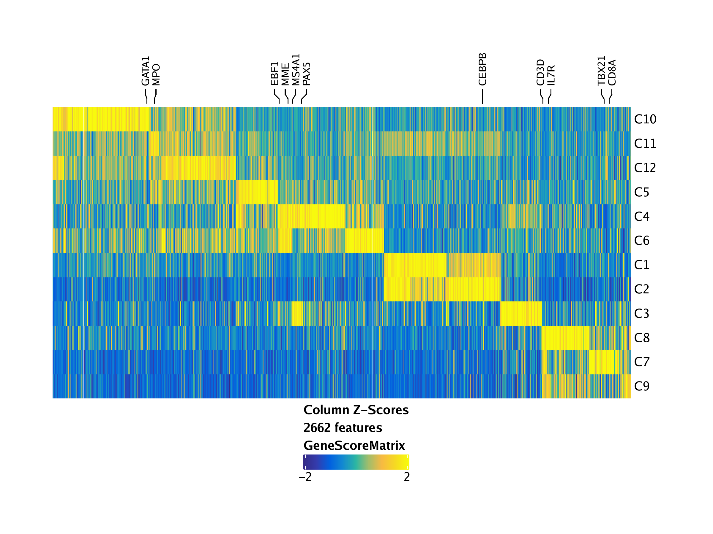

7.3 Identifying Marker Genes
To identify marker genes based on gene scores, we call the getMarkerFeatures() function with useMatrix = "GeneScoreMatrix". We specify that we want to know the cluster-specific features with groupBy = "Clusters" which tells ArchR to use the “Clusters” column in cellColData to stratify cell groups.
markersGS <- getMarkerFeatures(
ArchRProj = projHeme2,
useMatrix = "GeneScoreMatrix",
groupBy = "Clusters",
bias = c("TSSEnrichment", "log10(nFrags)"),
testMethod = "wilcoxon"
)## ArchR logging to : ArchRLogs/ArchR-getMarkerFeatures-f4e4232fa80b-Date-2020-04-15_Time-10-04-48.log
## If there is an issue, please report to github with logFile!
## MatrixClass = Sparse.Double.Matrix
## 2020-04-15 10:04:49 : Matching Known Biases, 0.009 mins elapsed. ##
## ###########
## 2020-04-15 10:05:23 : Completed Pairwise Tests, 0.585 mins elapsed.
## ###########
## ArchR logging successful to : ArchRLogs/ArchR-getMarkerFeatures-f4e4232fa80b-Date-2020-04-15_Time-10-04-48.log
This function returns a SummarizedExperiment object containing relevant information on the marker features identified. This type of return value is common in ArchR and is one of the key ways that ArchR enables downstream data analysis. SummarizedExperiment objects are similar to a matrix where rows represent features of interest (i.e. genes) and columns represent samples. A SummarizedExperiment object contains one or more assays, each represented by a matrix-like object of numeric data, and metadata that applies to the rows or columns of the assays matrices. It is beyond the scope of this tutorial to dive into SummarizedExperiment objects but check out the bioconductor page if you need more information.
We can get a list of DataFrame objects, one for each of our clusters, containing the relevant marker features using the getMarkers() function:
## DataFrame with 291 rows and 9 columns
## seqnames start end strand name idx
##
## 8362 chr16 49891830 49524515 2 ZNF423 539
## 7025 chr14 105714879 105717430 1 BTBD6 764
## 8726 chr16 89043504 88941263 2 CBFA2T3 903
## 7024 chr14 105781914 105675623 2 BRF1 763
## 17158 chr5 997455 988425 2 LOC100506688 18
## … … … … … … …
## 19084 chr6 119812467 119773712 2 LOC285762 925
## 18913 chr6 83072923 83077133 1 TPBG 754
## 12814 chr2 124782864 125672863 1 CNTNAP5 755
## 20390 chr7 150147962 150176483 1 GIMAP8 1028
## 7384 chr15 52569397 52569314 2 MIR1266 347
## Log2FC FDR MeanDiff
##
## 8362 1.94888141545084 2.95473053609015e-21 2.08129078745695
## 7025 1.88748443360838 3.25360925877231e-15 2.29925343722754
## 8726 1.5858058377813 3.25360925877231e-15 2.11727644857422
## 7024 1.41061475820385 2.00400144783449e-14 1.9923490244715
## 17158 3.16686924437513 2.00400144783449e-14 0.693424444489265
## … … … …
## 19084 1.36625245611966 0.00853516274073803 0.211727000065234
## 18913 2.30499450627443 0.00854168013784213 0.544454051635953
## 12814 2.28305835231306 0.00893526022954534 0.82240450922043
## 20390 1.52933035478039 0.00910586862792073 0.516763460205267
## 7384 2.16292224987129 0.00986664274558125 0.22839476831448
To visualize all of the marker features simultaneously, we can create a heatmap using the markerHeatmap() function, optionally supplying some marker genes to label on the heatmap via the labelMarkers parameter.
markerGenes <- c(
"CD34", #Early Progenitor
"GATA1", #Erythroid
"PAX5", "MS4A1", "EBF1", "MME", #B-Cell Trajectory
"CD14", "CEBPB", "MPO", #Monocytes
"IRF8",
"CD3D", "CD8A", "TBX21", "IL7R" #TCells
)
heatmapGS <- markerHeatmap(
seMarker = markersGS,
cutOff = "FDR <= 0.01 & Log2FC >= 1.25",
labelMarkers = markerGenes,
transpose = TRUE
)## Printing Top Marker Genes:
## C1:
## PADI4, PADI6, CDA, LINC01226, TMEM61, RPE65, PIN1P1, GNAT2, HSD3BP4, SRGAP2D, SNX27, THEM5, S100A8, FCAMR, UCN3, MIR604, MIR938, MIR4679-2, OR56B4, OR52B2
## C2:
## HES4, FHAD1, PLA2G2C, CELA3A, RHD, FGR, MYCL, BTBD19, TCTEX1D4, SLC5A9, L1TD1, PALMD, FRRS1, GPR88, MYBPHL, CASQ2, NHLH2, SLC22A15, CTSS, S100A11
## C3:
## PLEKHM2, MIR4422, CLCA3P, LOC729970, ALG14, TMEM56, SLC16A4, FCRL3, AIM2, SLAMF6, C1orf220, MIR4424, RALGPS2, RHEX, FCMR, BPNT1, KMO, LINC00700, ARID5B, MIR548AV
## C4:
## LINC01342, LINC01346, SERINC2, RIMS3, SLFNL1-AS1, EDN2, ROR1, C1orf141, CACNA1S, KLHDC8A, SLC16A9, MIR346, GLYATL2, FAM111B, OR5AN1, RAB30-AS1, BTG4, TEAD4, CD9, PIANP
## C5:
## LRRC38, FAM131C, PLA2G2D, LOC653160, TSPAN1, TTC39A, GBP1P1, LOC100129046, HAO2, RORC, S100A5, S100A4, ILDR2, FMO1, ANGPTL1, LAD1, TNNI1, VASH2, GJC2, KCNK1
## C6:
## TTLL10, ATP13A2, PAX7, CSMD2, MIR3659, TRABD2B, ERICH3, ABCA4, NTNG1, LOR, FAM189B, UCK2, PHLDA3, LEMD1, SERTAD4-AS1, ESRRG, TRIM67, LOC149373, C1orf131, DEPP1
## C7:
## TNFRSF4, RUNX3, LEXM, IL12RB2, VCAM1, CHIA, BCL2L15, CD160, PDZK1, SH2D2A, NTRK1, PYHIN1, SLAMF7, FCGR3A, CD247, LOC100505918, FASLG, GAS5-AS1, ATP6V1G3, GREM2
## C8:
## RCAN3, HPCAL4, ANKRD13C, HHLA3, ZRANB2, PLPPR5, PRMT6, AMIGO1, CHI3L2, CD2, PTGFRN, ACP6, NIT1, NUF2, MIR557, IL19, MIR1265, ANKRD26, ZEB1, ZEB1-AS1
## C9:
## ESPN, MIR4252, RCAN3AS, HOOK1, ZNF37BP, ZNF239, SLC10A1, TMEM202, RRN3P1, TP53TG3D, MT1F, ZNF286B, FOXO3B, TRIM16L, PEX12, LOC729966, PDCD2L, ZNF283, ZNF610, TLX2
## C10:
## MIR4689, HES2, NPPA-AS1, MFN2, FBLIM1, KLHDC7A, RPS14P3, FAM43B, MIR378F, GRHL3, TRIM63, GJB3, GJA4, EPHA10, RHBDL2, PPIE, RIMKLA, FAM183A, LINC00853, PDZK1IP1
## C11:
## NPPA, SFTA1P, WT1-AS, MIR4488, LRRC10B, CACNA1C-AS4, LOC728739, CCNA1, LPO, MPO, TTR, PRTN3, ELANE, OR10H2, NCAN, OXER1, INSM1, BPIFA1, EMILIN3, COL9A3
## C12:
## LINC02593, VWA1, CHD5, TMEM51-AS1, MFAP2, PADI3, HSPG2, C1QB, MIR4253, KIAA1522, C1orf94, LINC01343, KNCN, DMRTB1, CDCP2, ACOT11, ASB17, CYR61, SLC6A17, LOC643441
## Identified 2662 markers!
## Adding Annotations..
## Preparing Main Heatmap..
To plot this heatmap, we can use the ComplexHeatmap::draw() function because the heatmapGS object is actually a list of heatmaps:

To save an editable vectorized version of this plot, we use plotPDF().
plotPDF(heatmapGS, name = "GeneScores-Marker-Heatmap", width = 8, height = 6, ArchRProj = projHeme2, addDOC = FALSE)## [1] 0